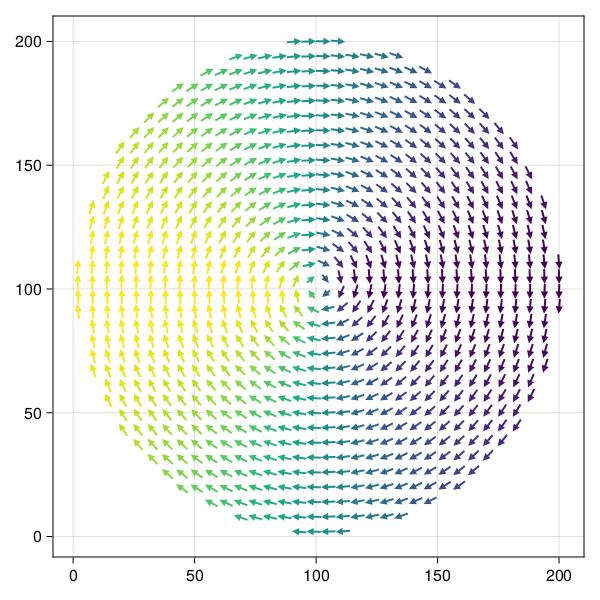

Magnetic vortex


We import JuMag and use double float precision in the simulation
using JuMag
using NPZ
JuMag.cuda_using_double(true)In this example, the studied system is a round nanodisk. Since we are using finite different method, we create a FDMesh with dimensions 200nm x 200nm x 20 nm.
mesh = FDMeshGPU(dx=2e-9, dy=2e-9, dz=5e-9, nx=100, ny=100, nz=4)FDMeshGPU{Float64}(2.0e-9, 2.0e-9, 5.0e-9, 100, 100, 4, 40000, false, false, false, 2.0e-26)The shape of the studied system can be controlled by setting a zero Ms in the unnecessary region. Here we defined a function that return a nonzero Ms within the circle and otherwise return zero. This function should take six parameters (i,j,k,dx,dy,dz).
function circular_Ms(i,j,k,dx,dy,dz)
x = i-50.5
y = j-50.5
r = (x^2+y^2)^0.5
if (i-50.5)^2 + (j-50.5)^2 <= 50^2
return 8e5
end
return 0.0
endcircular_Ms (generic function with 1 method)To start the simulation, we need to give an initial state. Here we use a function to give the initial state.
function init_fun(i,j,k,dx,dy,dz)
x = i-50.5
y = j-50.5
r = (x^2+y^2)^0.5
if r<20
return (0,0,1)
end
return (y/r, -x/r, 0)
endinit_fun (generic function with 1 method)We use a function to collect the necessary definition of this problem.
function relax_system(mesh)
#We create a simulation
sim = Sim(mesh, driver="SD", name="sim")
#Set the saturation magnetization and define the geometry as well.
set_Ms(sim, circular_Ms)
#We add the exchange interaction and the demagnetization field to the system.
add_exch(sim, 1.3e-11, name="exch")
add_demag(sim)
#Initialize the system using the `init_fun` function
init_m0(sim, init_fun)
#Relax the system
relax(sim, maxsteps=5000, stopping_dmdt=0.1)
#Save the final magnetization state for later postprocessing
npzwrite("vortex.npy", Array(sim.spin))
#Save the vtk as well
save_vtk(sim, "vortex", fields=["exch", "demag"])
endrelax_system (generic function with 1 method)Recall the function
relax_system(mesh)1-element Vector{String}:
"vortex.vts"We use the following script to plot the vortex structure
using CairoMakie
function plot_spatial_m()
m = npzread("vortex.npy")
nx, ny, nz = 100, 100, 4
xs = [i*2 for i=1:3:nx]
ys = [j*2 for j=1:3:ny]
m = reshape(m, 3, nx, ny, nz)
mx = m[1,1:3:nx,1:3:ny,1]
my = m[2,1:3:nx,1:3:ny,1]
fig = Figure(resolution = (600, 600))
ax = Axis(fig[1, 1], backgroundcolor = "white")
lml = sqrt.(mx .^ 2 .+ my .^ 2)
mx[lml .< 0.1] .= NaN
my[lml .< 0.1] .= NaN
arrows!(ax, xs, ys, mx, my, arrowsize = 10, lengthscale = 4, linewidth = 2,
arrowcolor = vec(my), linecolor = vec(my), align = :center)
return fig
end
plot_spatial_m()
This page was generated using DemoCards.jl and Literate.jl.